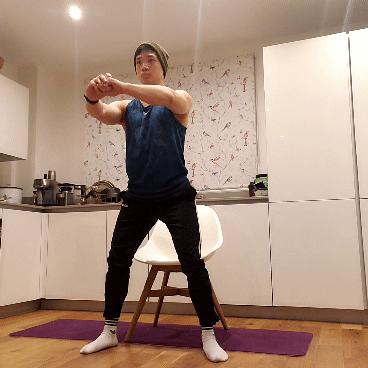
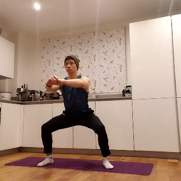
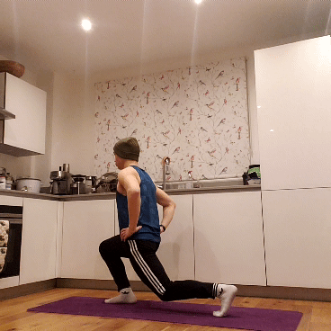
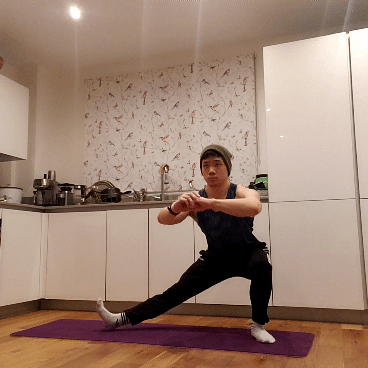

Lower Body: Squat
1 Chair Squat

Given that everyone is stuck at home during lockdown, you're probably a master of sitting down by now. Performing chair squats will provide you with a nice safety net as you transition towards a bodyweight squat.
Tips:
- As you descend, try to send your butt as far back as possible before you reach the seat. No one actually sits onto a chair like this, but it's important for mimicking a proper squat.
- Just like a normal squat, keep your core engaged throughout and contract your glutes as you stand up.
2 Squat to Calf Raise

You can't go wrong with a simple bodyweight squat: just drop your hips and then stand back up. Adding in a calf raise at the top will ensure that your legs are worked all the way through.
Tips:
- Use whatever feet position is comfortable for you, but most people will find that shoulder-width with slightly out-turned feet works best.
- The descent should be like sitting back into a tiny, imaginary stool.
- Pause at the bottom of the movement before pushing through your heels to return to the top.
- Once you've fully completed the squat, press through your toes to perform a calf raise. Both the squat and the calf raise should count as one repetition.
3 Split Squat

If the squat and lunge had a baby, the split squat would be the end result. The front leg will mainly use your quads to push, while the back leg relies on the calves. Make sure to switch legs so you don't overtrain one side!
Tips:
- By having your back foot go onto tiptoes, this lets you shift your weight forward.
- Put your hands on your hips or out to sides for balance: whatever feels comfortable for you is best.
- Your back leg's knee shouldn't touch the ground as you descend! Doing these over a soft mat might be useful in case you overshoot.
4 Cossack Squat

Derived from a Turkic word meaning "free man", Cossack squats are an adventurous alternative to the split squat for working your legs separately. By shifting your weight from side-to-side, your coordination and balance will surely improve with every rep.
Tips
- You'll want your feet pretty wide for this exercise, with the toes facing forward.
- At the bottom, the foot you're squatting onto should be flat while the other foot should be upturned from the heel.
- Go as low as you feel comfortable. Sometimes you might lose your balance, so be careful and be prepared if you fall!
5 Plyometric Tuck Squat

Stand back - these are explosive. Plyometric squats require you to leave the ground with every rep, ensuring that you're always working at maximum intensity. Tuck your legs at the apex of your jump to add the finishing touch on this taxing exercise.
Tips:
- The balls of your feet should be the last to leave the ground AND the first to land.
- Keep your core engaged throughout the movement.
- As you jump, try to tuck your legs until your thighs are parallel with the ground.
- Soften your landings if possible - this will lessen the impact on your joints (and possibly your downstairs neighbours).
HOME